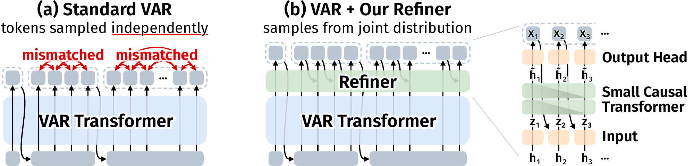
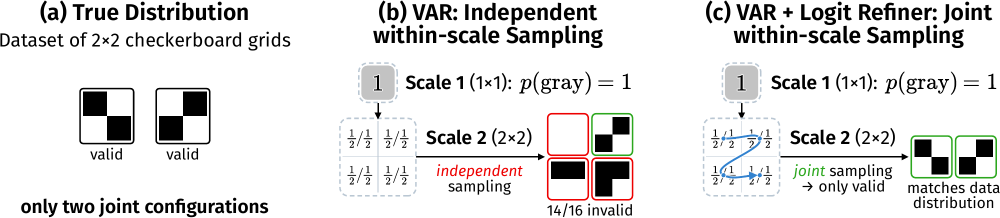
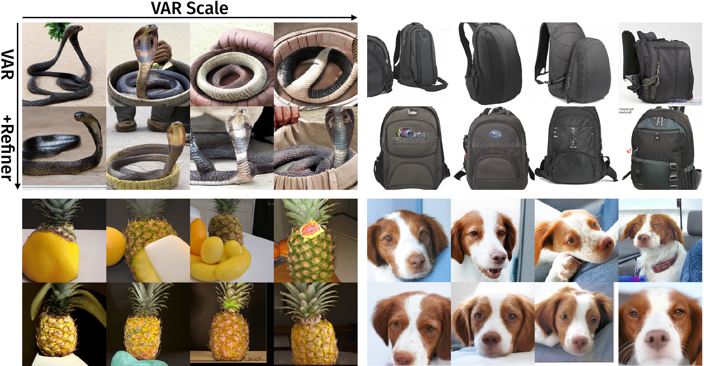
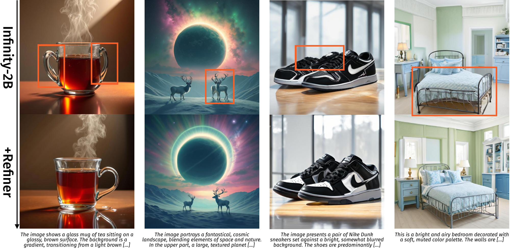
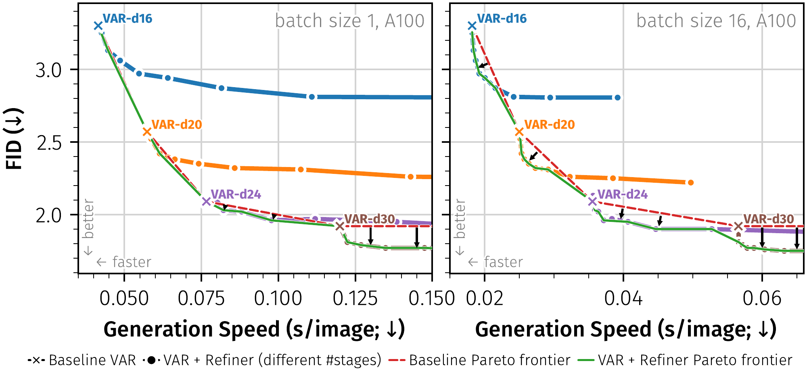
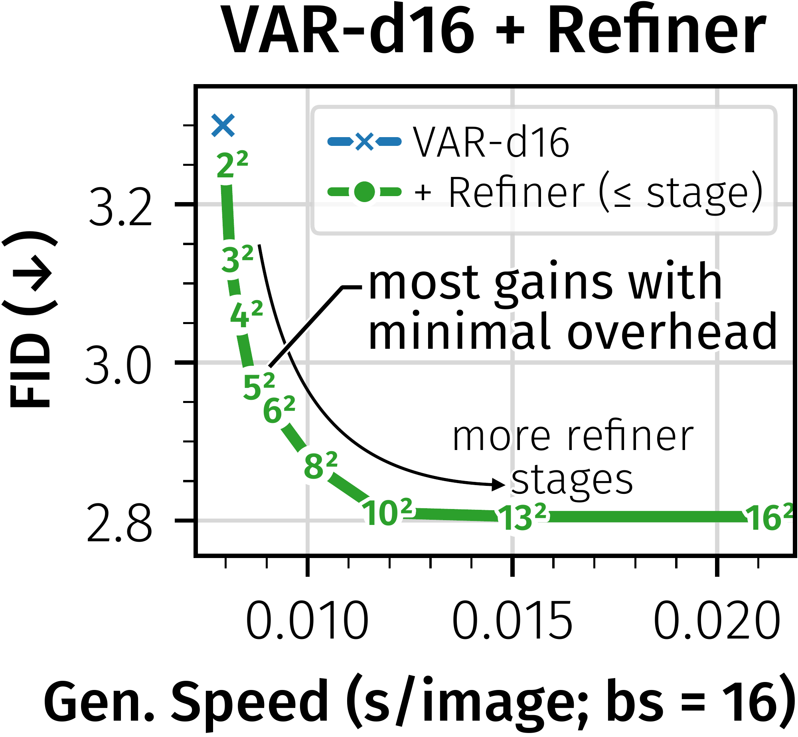

{kind=link}
Correct marginals. Incoherent joint samples.
Visual autoregressive models generate images from coarse to fine, sampling all tokens within each scale independently. Even accurate per-token predictions can produce neighboring patches that do not fit together. Logit Refiner restores these missing dependencies with a small causal transformer conditioned on frozen backbone features. The backbone still runs once per scale; only the lightweight refiner samples sequentially.
A small correction to how tokens are sampled
The backbone already reasons across the current scale. The bottleneck comes afterward: independently sampling its token distributions discards their dependencies. Logit Refiner uses those rich hidden states to model the remaining dependencies with just two causal transformer blocks.
{kind=link}

Reuse pretrained features
Keep the VAR backbone frozen. Combine each hidden state with an embedding of the previous sampled token.
Learn the missing dependencies
Train the refiner with teacher forcing and a causal mask. Identity initialization preserves the base model’s predictions at the start of training.
Sample a coherent scale
Generate tokens in raster order, conditioning each prediction on tokens already sampled within the same scale.
Why correct per-token probabilities are not enough
{kind=link}

Better generation at every backbone scale
Across VAR backbones from 310M to 2B parameters, the refiner improves FID and recall. VAR-d24 + Refiner outperforms the larger VAR-d30 backbone at roughly half the total parameter count.
| Model | Total params | FID ↓ | IS ↑ | Precision ↑ | Recall ↑ |
|---|---|---|---|---|---|
| VAR-d16 | 310M | 3.30 | 274.4 | 0.84 | 0.51 |
| + Logit Refiner | 356M | 2.81 | 267.2 | 0.81 | 0.56 |
| VAR-d20 | 600M | 2.57 | 302.6 | 0.83 | 0.56 |
| + Logit Refiner | 671M | 2.17 | 274.7 | 0.80 | 0.60 |
| VAR-d24 | 1.0B | 2.09 | 312.9 | 0.83 | 0.57 |
| + Logit Refiner | 1.1B | 1.83 | 288.2 | 0.79 | 0.63 |
| VAR-d30 | 2.0B | 1.92 | 323.1 | 0.82 | 0.58 |
| + Logit Refiner | 2.2B | 1.76 | 319.4 | 0.80 | 0.62 |
50k generated samples; values reproduced from the paper’s system-level comparison. CFG and top-k are swept individually. The lower IS values accompany the lower guidance scales that are FID-optimal for the refiner; varying guidance trades off FID and IS. ↓ lower is better; ↑ higher is better.
{kind=link}

Controlled ablation: what drives the gains?
| Variant | Joint sampling | Params | FID ↓ |
|---|---|---|---|
| VAR-d16 baseline | No | 310M | 3.30 |
| Additional backbone training | No | 310M | 3.12 |
| Parallel refiner | No | 356M | 3.15 |
| Autoregressive refiner | Yes | 356M | 2.81 |
The parallel and autoregressive refiners have the same architecture and parameter count, with different attention masks and sampling rules. The larger gain comes from modeling the within-scale joint distribution.
The same idea transfers to text-to-image
Applied to a frozen Infinity-2B backbone, Logit Refiner improves structural coherence in 1024 × 1024 text-to-image generation. Refinement is applied only to early stages, up to 6 × 6 tokens.
{kind=link}

| Model | Average score ↑ |
|---|---|
| Infinity-2B | 9.79 |
| + Logit Refiner | 9.91 |
600 images: the first 50 prompts in each of 12 HPSv3 subsets. This is an automated preference score; gains vary by subset.
Most of the gain comes early
For VAR-d16, training only the refiner takes 66 H200-hours and improves FID from 3.30 to 2.81. Training the full integrated model from scratch reaches 2.57, but costs 1,845 H200-hours.
At inference, refining only early scales gives a useful quality–speed tradeoff. Refining through 10 × 10 tokens retains 99% of the full FID improvement while reducing the refiner’s overhead by 71%. Through 8 × 8, it retains 88% with an 84% overhead reduction.
{kind=link}

See the early-scale tradeoff for VAR-d16
{kind=link}

Citation
@inproceedings{li2026logitrefiner,
title = {Logit Refiner: Improving Visual Autoregressive Models
via Intra-Scale Dependency Modeling},
author = {Li, Meimingwei and Baumann, Stefan Andreas and
Krause, Felix and Ommer, Bj{\"o}rn},
booktitle = {European Conference on Computer Vision (ECCV)},
year = {2026},
url = {https://compvis.github.io/logit-refiner/}
}